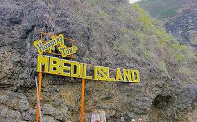
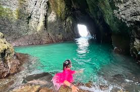
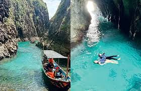
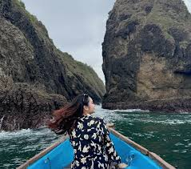
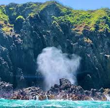
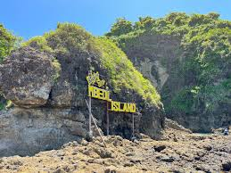

Pulau Bedil
destinasi wisata bahari eksotis di Banyuwangi
Galeri Foto






Informasi Detail
Pulau Bedil adalah destinasi wisata bahari yang indah dan masih alami, sering dijuluki sebagai "Raja Ampat-nya Banyuwangi". Pulau kecil ini menawarkan pemandangan gugusan pulau eksotis dengan air laut jernih berwarna hijau kebiruan dan pasir putih yang lembut.
Keunikan
- Kemiripan Lanskap dengan Raja Ampat: Pulau ini terkenal karena pemandangan gugusan pulau karang kecil yang tersebar di tengah laut biru jernih, mirip dengan formasi karst di Raja Ampat, Papua Barat
- Kealamian dan Ketenangan: Berbeda dengan pantai-pantai lain yang mungkin lebih ramai, Pulau Bedil menawarkan suasana yang masih sangat alami, tenang, dan belum terlalu padat pengunjung.
- Akseeibilitas Unik: Pulau ini adalah pulau tak berpenghuni. Akses utamanya mengharuskan pengunjung menaiki perahu nelayan dari Pantai Mustika atau Pantai Pancer selama beberapa menit, menambah kesan petualangan dan eksklusivitas.
- Kejernihan Air Laut: Air di sekitar pulau ini terkenal sangat jernih, berwarna hijau toska atau biru muda, memungkinkan pengunjung untuk melihat dasar laut dengan jelas dan berenang dengan nyaman di area laguna yang tenang.
- Pasir Putih yang Lembut: Garis pantai di Pulau Bedil memiliki pasir putih yang sangat bersih dan lembut, menambah daya tarik estetika pantai yang asri.
Aktivitas yang Bisa Dilakukan
- Snorkeling dan Diving
- Berenang
- Island Hopping
- Menikmati Pemandangan dan Fotografi
- Bersantai di Tepi Pantai
Info Praktis
- Lokasi: perairan Pancer, Desa Sumberagung, Kecamatan Pesanggaran, Kabupaten Banyuwangi
- Biaya Masuk: sekitar Rp 185.000 - Rp 470.000 per orang untuk paket open trip
- Waktu Terbaik Berkunjung: Bulan April hingga Oktober. Pada periode ini, cuaca cenderung cerah, ombak lebih tenang, dan visibilitas air untuk snorkeling lebih baik.
- Transportasi: Anda bisa menggunakan kendaraan pribadi (mobil atau motor) atau menyewa mobil/motor di Banyuwangi Dilanjutkan dengan menggunakan perahu nelayan sewaan. Waktu tempuh perjalanan laut ini sekitar 10-30 menit tergantung kondisi cuaca dan ombak.
- Akomodasi:
Peraturan Kunjungan
- Menjaga Kebersihan
- Tidak Merusak Biota Laut
- Gunakan Pakaian yang Sopan
- Ikuti Arahan Pemandu
- Selalu Utamakan Keselamatan